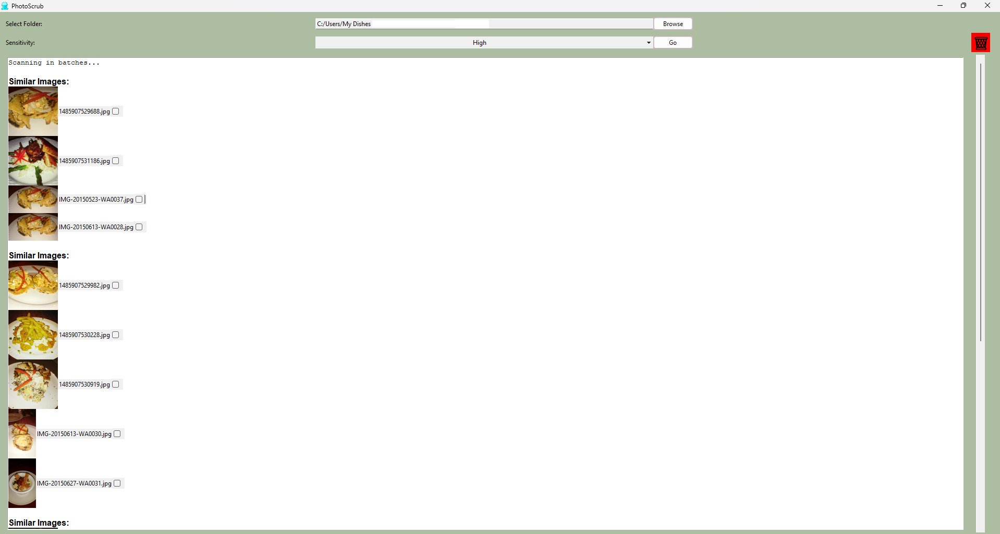
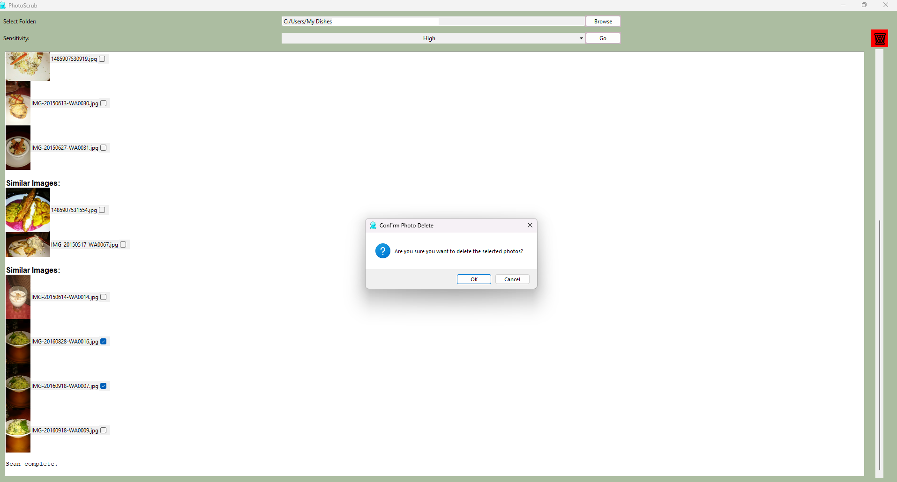

Overview
Photoscrub is a simple desktop app designed to identify and remove duplicate or visually similar photos within a collection. Users can analyze images for similarity using automated hashing techniques and efficiently manage duplicates by reviewing and deleting selected files.
Features
- Reduced manual effort for managing large photo collections
- Automated detection of similar or duplicate photos
- Batch analysis of folders for quicker photo comparison
- Deletion of unwanted images through a simple interface
Screenshots

